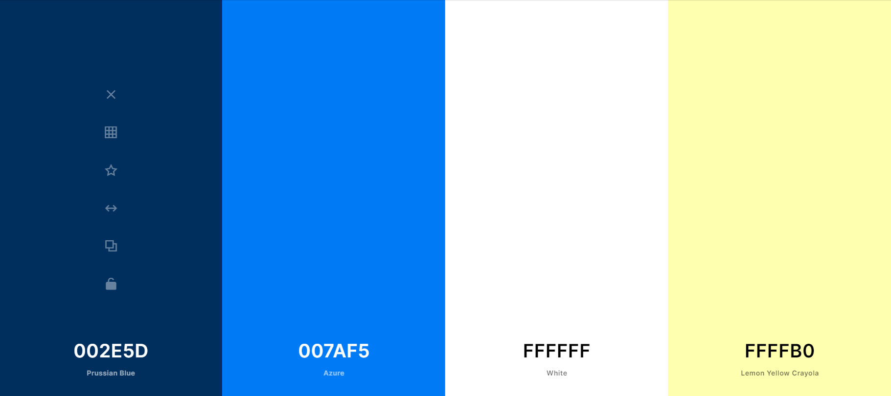

Color Scheme
2EC4B6
This will be used for the header and footer on each page. It will also be used to set links apart on the page.
CBF3F0
This color will be used for all h1/h2/h3/h4/h5 tags found on the site that are not part of the header.
FFFFF
This white color will be used for the background of the site and most paragraphs
FFBF69
This soft shade of gold will be used as an alternate background to the FFFFF if something needs to be highlighted.
FF9F1C
This will be the strong accent of the website and will be used to in contrast to the 2EC4B6. It will also be used on all hover links.